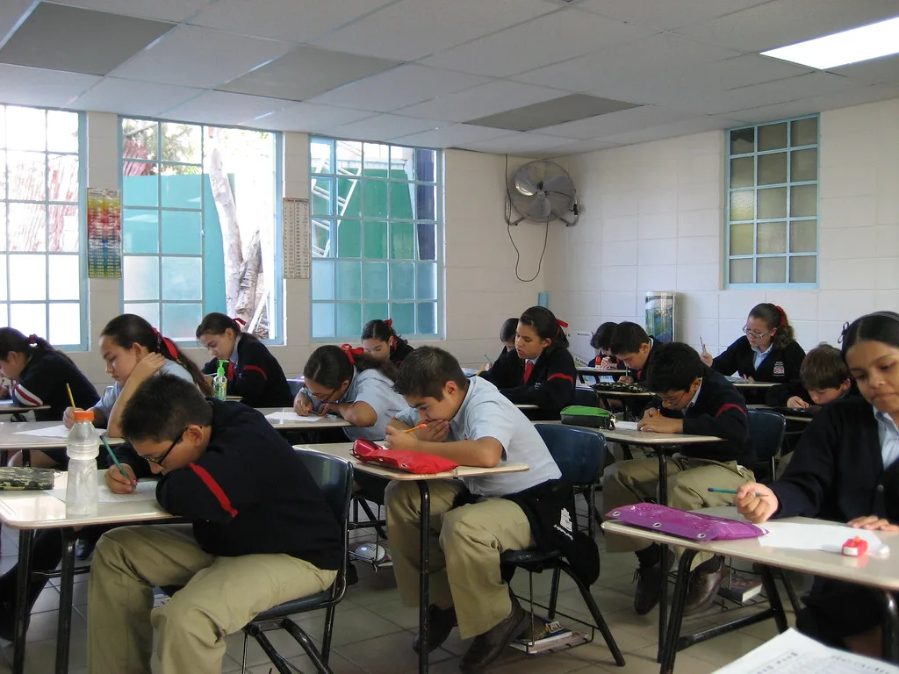

지난 19일 치러진 2027학년도 대학수학능력시험(수능)은 국어와 영어가 지난해보다 쉽게 출제됐고, 상위권 당락은 수학에서 갈릴 가능성이 크다는 분석이 나왔다. EBS 현장교사단과 주요 입시업체들은 시험 직후 국어가 지난해 수능과 올해 9월 모의평가보다 난도가 낮았다는 데 대체로 의견을 모았다. 올해 수능에는 55만여 명이 응시했다. 출제 당국이 사교육에 유리한 초고난도 문항을 배제하겠다는 방침을 밝힌 가운데 치러진 시험이어서, 변별력이 어디서 확보됐는지에 관심이 쏠렸다.
국어는 지문의 정보량과 구조의 복잡성이 지난해보다 줄었다는 평가를 받았다. EBS 교재와의 연계율은 53.3%로 전체 45문항 가운데 24문항이 연계됐다. 친숙한 소재의 지문이 많아 수험생의 독해 부담을 덜었다는 분석이다. 종로학원, 대성학원, 이투스 등 입시업계도 지난해보다 쉬웠다고 봤다. 다만 일부에서는 9월 모의평가와 비슷한 수준이라는 평가도 나왔고, 6월 모의평가와 비교하면 변별력이 다소 높았다는 의견도 있었다.

영어 역시 지난해 수능과 9월 모의평가와 비슷하거나 더 쉬웠다는 분석이 주를 이룬다. 영어는 절대평가로 일정 점수 이상이면 같은 등급을 받는 만큼 1등급 비율이 늘어날 수 있다는 전망이 나온다. 영어의 EBS 연계율은 55.6%로 세 영역 가운데 가장 높았다. 출제위원장은 시험 당일 영어 1등급 비율이 안정적인 수준일 것이라고 밝힌 바 있다.
수학을 두고는 평가가 엇갈린다. EBS는 공통과목이 지난해보다 평이했고 선택과목은 비슷한 수준이었다고 분석했지만, 입시업계 일부는 예년보다 까다로웠다고 평가했다. 변별력을 가른 문항으로는 공통과목 수학Ⅰ 22번과 수학Ⅱ 21번, 그리고 확률과통계·미적분·기하 각 선택과목의 30번 문항이 꼽혔다. 선택과목별 체감 난도도 학원마다 판단이 달라, 미적분이 어려웠다는 의견과 확률과통계의 계산이 까다로웠다는 의견이 함께 나왔다.
국어와 영어의 변별력이 약해지면서 수학의 영향력이 커질 것이라는 관측이 많다. EBSi가 추정한 1등급 원점수 커트라인은 국어 화법과 작문 95점, 언어와 매체 91점이고, 수학은 확률과통계 90점, 미적분 86점, 기하 89점이다. 다만 이는 수험생들이 입력한 가채점 결과를 바탕으로 한 추정치여서 실제 성적표와는 차이가 날 수 있다. 수학은 공통과목과 선택과목 점수를 여러 단계에 걸쳐 조정해 표준점수를 산출하기 때문에, 원점수만으로 최종 등급을 가늠하기는 어렵다는 점도 유의해야 한다.
올해 입시의 또 다른 변수로는 이른바 '사탐런'이 꼽힌다. 자연계열 수험생 상당수가 상대적으로 학습 부담이 적은 사회탐구 과목으로 옮겨 가면서, 탐구 영역 점수 분포와 대학별 반영 방식이 정시 결과에 적지 않은 영향을 줄 것이라는 분석이다. 졸업생 응시자가 크게 늘어난 점도 상위권 경쟁을 더 치열하게 만들 요인으로 거론된다.
입시 전문가들은 가채점 결과를 토대로 수시 대학별고사 응시 여부와 정시 지원 전략을 신중하게 판단해야 한다고 조언한다. 실제 난이도와 등급별 점수 분포는 채점이 끝나야 정확히 확인할 수 있다. 수험생들은 앞으로 이의신청 심사와 정답 확정 절차를 거쳐 다음 달 성적표를 받게 된다.